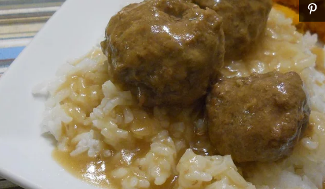

Swedish Meatballs

Description
Delicious meatballs covered in a fantastic gravy flavored with
sherry. Serve with rice.
Ingredients
- 3 tablespoons butter
- 1 onion, chopped
- 2 slices bread, cubed
- 1 (12 fluid ounce) can evaporated milk, divided
- 1 ½ pounds ground beef
- ½ pound ground pork
- 2 eggs
- 2 tablespoons Worcestershire sauce
- 1 tablespoon dried parsley
- 1 teaspoon ground nutmeg
- 1 teaspoon ground allspice
- 1 teaspoon salt
- ½ teaspoon lemon pepper
- ¼ teaspoon ground black pepper
- 2 tablespoons olive oil, or as needed
- 4 cups beef stock
- ¼ cup all-purpose flour
- ¼ cup sherry
Steps
- Melt butter in a skillet over medium heat;
cook and stir onion in the melted butter
until tender, 5 to 10 minutes.
- Place bread cubes in a bowl; pour 1/2 cup
evaporated milk over bread cubes. Set aside
until bread cubes absorb milk.
- Mix ground beef, ground pork, cooked onion,
bread cube mixture, eggs, Worcestershire sauce,
parsley, nutmeg, allspice, salt, lemon pepper,
and ground black pepper together in a large bowl.
Form mixture into golf ball-sized meatballs.
- Heat olive oil in the same skillet used for onion
over medium-high heat; cook meatballs in the hot
oil, turning with tongs, until all sides are browned,
10 to 15 minutes. Pour in beef stock and simmer
until meatballs are cooked through, 15 to 20 minutes.
Transfer meatballs to a serving bowl, reserving
liquid in the skillet.
- Remove 1 cup beef stock from skillet; whisk flour into
the 1 cup stock until smooth. Pour flour mixture back
into skillet, whisking until mixture is smooth.
Gradually whisk remaining evaporated milk and sherry
into beef stock mixture. Simmer, stirring occasionally,
until gravy is warmed and smooth, 5 to 10 minutes.
Pour gravy over meatballs to serve.